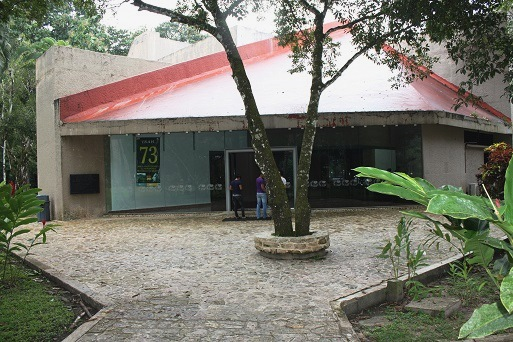
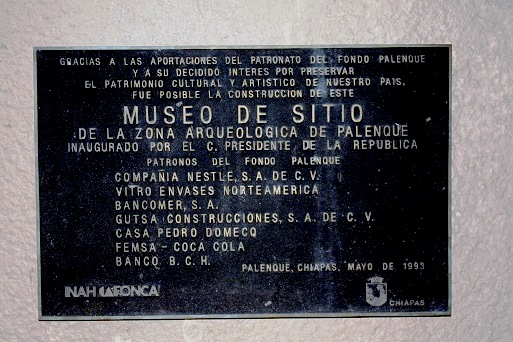
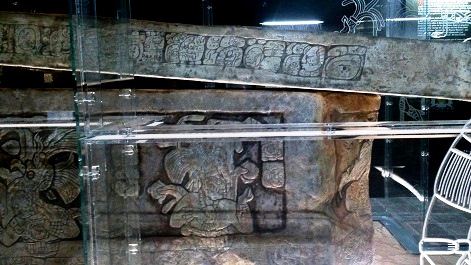
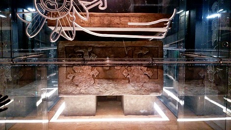
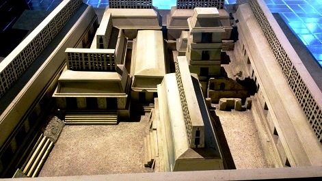
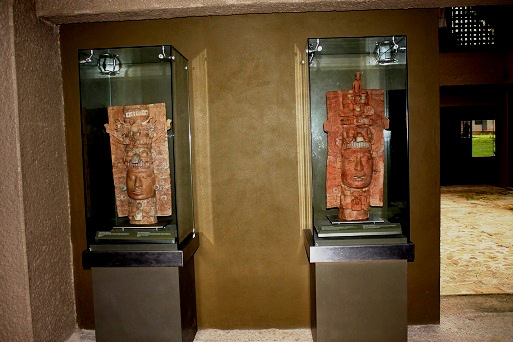

Muestra el desarrollo artístico que se vivió en la ciudad de Palenque, por medio de figuras de barro, esculturas de piedra caliza, tableros con jeroglíficos, así como incensarios y objetos hechos con jadeíta, concha y malaquita, entre otros. El Museo de Sitio de Palenque Alberto Ruz Lhuillier tuvo como precedente el inaugurado en 1957. El actual se encuentra en un inmueble construido ex profeso, abierto al público en diciembre de 1994. Considerado como uno de los museos arqueológicos más notables del área maya, reúne alrededor de 234 objetos procedentes de distintas áreas de Palenque, que atestiguan las expresiones estéticas generadas por el poder dinástico de la antigua urbe, además de que constituyen fuentes de información sobre las creencias religiosas, prácticas rituales y formas de organización política de la sociedad palencana.
Este museo se encuentra ubicado dentro de la zona arqueológica de la región de Palenque.
Si sale de Tuxtla Gutiérrez a San Cristóbal tomar la carretera 190, recorriendo 68 Km; de San Cristóbal a Ocosingo, sale de San Cristóbal hasta llegar al entronque de la carretera 199, recorriendo 88 km, hacia Ocosingo. Posteriormente, después de haber recorrido 103 km y con un tiempo aproximado de 5 horas, arribará a esta ciudad.
En este sitio turístico encontrará actividades tales como:
* Visitas guíadas
* Fotografía
* Talleres educativos
* Curso de verano
* Asesorías a escolares






Posicione el mouse o de click sobre las Imágenes.
{kind=link}
{kind=link}
{kind=link}
{kind=link}
{kind=link}
{kind=link}